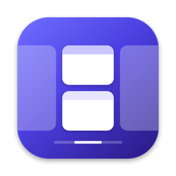
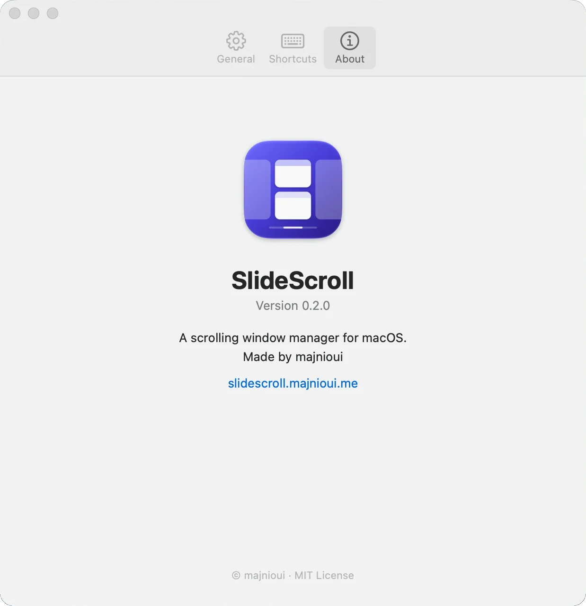

Your windows, on an endless strip.
A window manager for macOS where new windows slide in beside you, and nothing ever gets squeezed.
curl -fsSL https://slidescroll.majnioui.me/install.sh | sh

Messages
Sam
See you at ten
Lee
Sent the file
~/code/slidescroll
$ swift build -c release
Compiling slidescroll
Finished release
fn focus_right(&mut self)
self.focused += 1;
self.scroll_into_view();
slidescroll.majnioui.me
Your windows, on an endless strip.
Every window keeps the width you gave it.
Groceries
Oranges, bread
Inbox
Example newsletter
Example album
Track one, 3:41
Thursday
Example meeting at ten
Library
1,204 photos
A pinned column stays at the edge while the rest of the strip scrolls past it. ⌃⌥P Each column keeps the width you gave it. Columns past the edge wait there, a sliver showing. ⌃⌥H ⌃⌥L ⌃⌥R Two windows share one column. Drag the edge between them to share the height. ⌃⌥[ ⌃⌥] A stack shown one window at a time, under a tab bar. Click a tab to switch. ⌃⌥⇧T
See it on a real Mac.
Safari, Ghostty, Sublime Text and Spotify on one strip, moved with the keyboard.

40 seconds. Plays from YouTube once you press play.
Set up in one window.
Shortcuts, swipes, startup, and a live check of the macOS settings that get in the way.

Launch at login, automatic updates, and a check that flags macOS settings that fight SlideScroll, with the way to fix each one.

Three- or four-finger swipes, which way the strip moves, the gap between windows, and apps that stay off the strip.

Every action takes two shortcuts, shown the way your own keyboard labels them. Click one and press new keys.

The version you run, who made it, and the way back here.
Every move has a key.
These are the defaults, and you can change any of them. Four-finger swipes scroll the strip too.
| Action | Keys |
|---|---|
| Focus left or right | ⌃⌥H ⌃⌥L |
| Move the column | ⌃⌥⇧H ⌃⌥⇧L |
| Cycle its width | ⌃⌥R |
| Full width and back | ⌃⌥F |
| Stack into a neighbour | ⌃⌥[ ⌃⌥] |
| Pin to an edge | ⌃⌥P |
What it asks of your Mac.
- macOS 13 or later
- Ventura, Sonoma, Sequoia and newer.
- Apple silicon
- Any Mac with an M-series chip.
- Accessibility permission
- macOS asks once, on first launch. It’s how windows get moved.
- Nothing else
- Free and MIT licensed. No account. The only network access is an update check, which you can turn off.
Give your windows room.
Download the disk image, or paste one line into Terminal.
curl -fsSL https://slidescroll.majnioui.me/install.sh | sh
The disk image isn’t notarized yet. If macOS won’t open it, go to System Settings, Privacy & Security, and click Open Anyway.
Prefer Homebrew? brew tap majnioui/slidescroll https://github.com/majnioui/SlideScroll, then brew install slidescroll builds it from source.